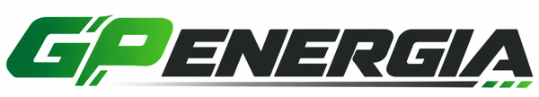
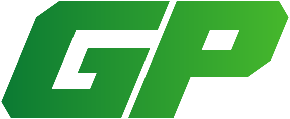

Logo GP ENERGIA na Pana wzorze
Podstawą jest przesłany wzór logo: zielone GP, grafitowe ENERGIA w pochylonej kapitalice, linia pod nazwą zakończona trzema zielonymi kreskami. Całość jest przerysowana jako wektor (SVG), a zmienione są tylko litery GP. To samo logo jest już na stronie: w nagłówku, stopce i jako ikona w przeglądarce.

- GP narysowane od nowa: grube, pochylone, z ostrymi, ściętymi narożnikami, w duchu WAGO. Bez zaokrągleń.
- ENERGIA zostaje z wzoru, ale z ostrymi narożnikami (R i G były zaokrąglone) i z literami bliżej siebie.
- Zieleń GP przechodzi od ciemnej do jasnej, jak we wzorze. Linia i trzy kreski pod nazwą bez zmian.
- Litery to własne ścieżki wektorowe, logo nie wymaga żadnego fontu ani licencji.
Na jasnym i na ciemnym tle
Na jasnym tle ENERGIA w graficie, na ciemnym w bieli. Wersja jasna jest w nagłówku strony, wersja na ciemne tło przyda się na banerze, oklejeniu auta czy odzieży.


Sam znak GP
Znak GP działa samodzielnie: jako ikona strony w przeglądarce i na telefonie, zdjęcie profilowe, naklejka na kartonie z magazynu.

Pliki: znak (SVG) · PNG · ikona strony (SVG)


Co dalej
- Jeśli coś w literach GP chce Pan jeszcze zmienić (grubość, ścięcia, odstęp), poprawię to na tym samym logo, a zmiana od razu pojawi się na stronie.
- Po akceptacji przygotuję komplet plików: SVG, PDF do druku i PNG w kilku rozmiarach.